Lumbago, névralgie, fibromyalgie, céphalée d tension, douleur au cou,
douleurs cervicales, torticolis, douleur au dos, arthrite, tendinites, bursites,
problèmes et douleurs articulaires, troubles du genou, spasmes, tremblements, séquelles
de blessures sportives, etc.
Lumbago
Est un terme général utilisé pour décrire la douleur dans le bas du dos.
Névralgie
Cette pathologie s’étend de l’arrière de la nuque jusqu’au sommet du crâne.
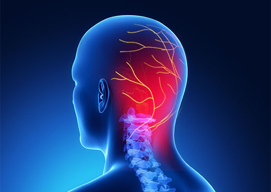
Céphalée de tension
En général, au réveil tout va bien. La douleur s’installe au fil des heures :
ça commence juste au-dessus de la nuque avant de se diffuser dans tout le crâne.
Torticolis
Intenses douleurs au niveau du cou et de la difficulté à tourner la tête sur les côtés.
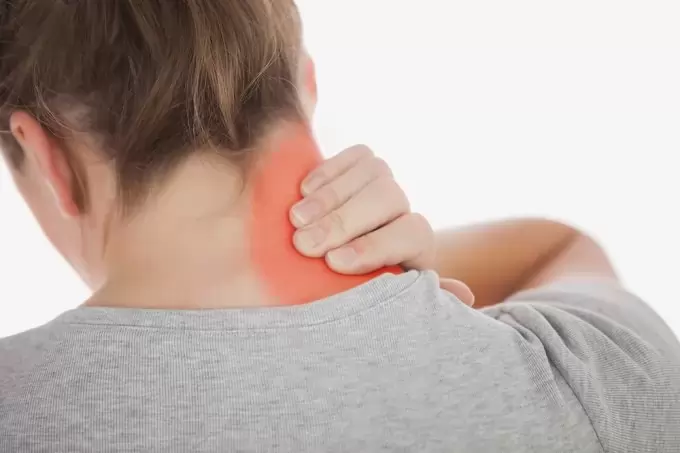
Troubles du genou
Les symptômes d’un problème de genou sont variés et dépendent de la cause et de
la gravité de la lésion. Malgré cela, la douleur au genou est fréquente.
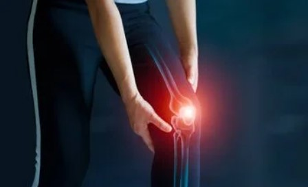
Tremblements
Le tremblement essentiel (TE) est un trouble du mouvement qui touche généralement
les mains, mais qui peut également toucher la tête, la voix et les jambes
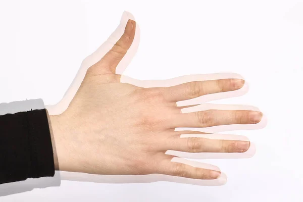
Arthrite
l'arthrite est une ateinte inflammatoire de l'articulation comme dans
la polyarthrite rhumatoïde ou la spondylarthrite ankylosante.
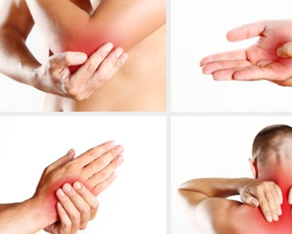
Troubles neuro-psychologiques et neurologiques :
Anxiété, stress, dépression, hyperactivité / déficit de l’attention, trouble de mémoire,
insomnie, migraine, paralysie faciale, hémiplégie, paralysie de Bell, sciatalgie,
engourdissements, douleurs post-herpétiques, douleurs et fasciculations du nerf trijumeau,
séquelles d’AVC, etc.
Anxiété
L’anxiété est une émotion désagréable qui combine des symptômes physiques
(le cœur bat vite et fort, la respiration semble difficile, présence de sueurs, tremblements,
étourdissements ou de mains moites, corps crispé, muscles tendus) et des pensées anxieuses
(inquiétudes, ruminations, obsessions, doutes, craintes).
Trouble de mémoire
les pertes de mémoire sont très variées. Certaines sont normales, d'autres peuvent
révéler des maladies plus graves.
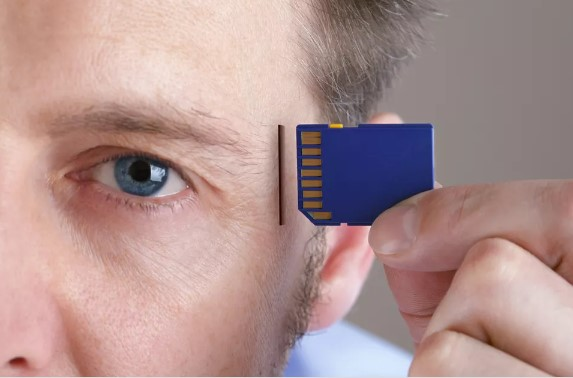
Paralysie de Bell
Aussi appelée paralysie a frigore, paralysie faciale périphérique ou paralysie périphérique,
est une paralysie d'apparition soudaine qui, en général, frappe partiellement ou totalement
un seul côté du visage.
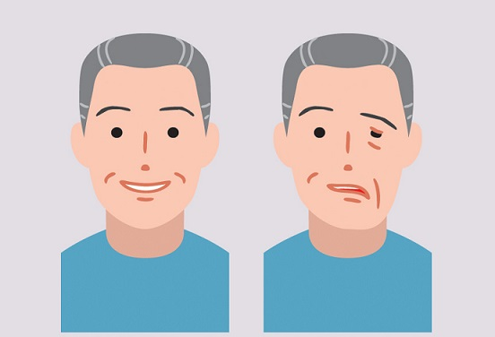
Sciatalgie
La douleur caractéristique de la sciatique part de la fesse pour irradier dans toute la jambe.
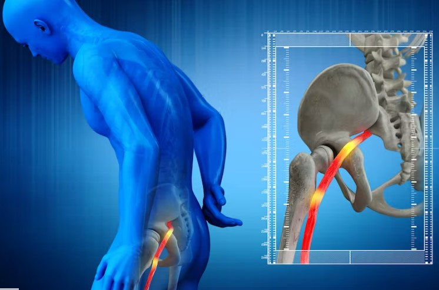
Séquelles d’AVC
Un accident vasculaire cérébral (AVC) est lié à l’interruption brutale de la
circulation sanguine d’une partie du cerveau, du fait de l’apparition d’un caillot
qui obstrue une artère qui irrigue le cerveau.
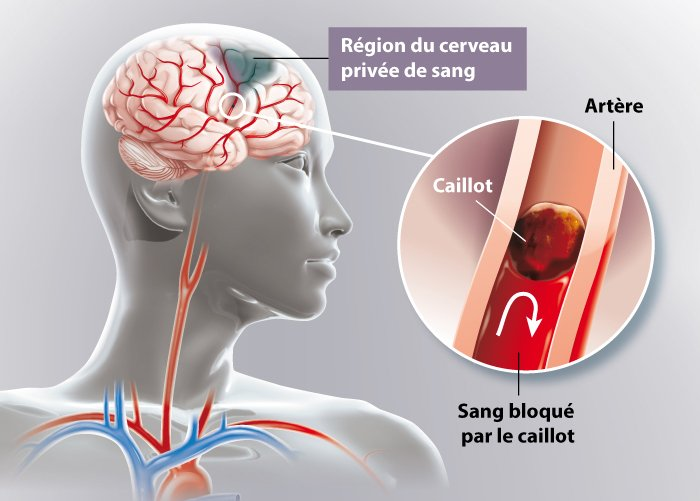
Troubles gastro-intestinaux et digestifs :
Côlon irritable, constipation, diarrhée, nausées, vomissements, gastrite, colite, etc.
Côlon irritable
Syndrome du côlon irritable : Que manger pour réduire l’inconfort ?
Ballonnements, douleurs abdominales, problèmes de transit… Le syndrome du côlon
irritable ou colopathie fonctionnelle est un trouble du fonctionnement de l’intestin
sans gravité mais responsable d’une gêne importante.
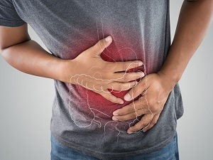
Nausées
Sensation désagréable au niveau de l’estomac et de la gorge d’envie de vomir
Gastrite
L’inflammation peut être provoquée par de nombreux facteurs, dont les infections,
le stress entraîné par une maladie grave, des lésions, certains médicaments
et les troubles du système immunitaire.
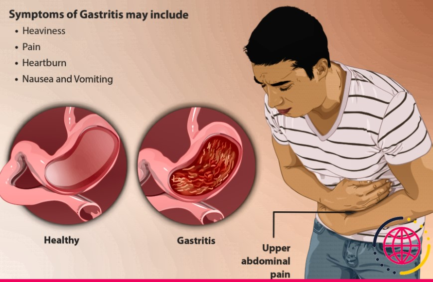
Troubles ORL et Allergiques :
Rhinite, sinusite, asthme, bronchite, toux, allergies saisonnières, troubles allergiques en général
Rhinite
Une rhinite est l'inflammation de la muqueuse nasale, avec pour conséquence une congestion
nasale, une rhinorrhée et des symptômes associés variables selon l'étiologie (p. ex., prurit,
éternuements, rhinorrhée purulente ou claire, anosmie). La rhinite est classée comme allergique
ou non allergique.
Sinusite
La sinusite est une inflammation des sinus qui congestionne et bloque les ouvertures entre
les sinus et la fosse nasale. Le mucus s’accumule, ce qui crée un milieu propice aux virus
et aux bactéries.
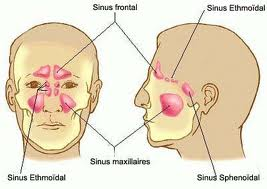
Soutien et aide pour les troubles de dépendance et les symptômes de sevrage :